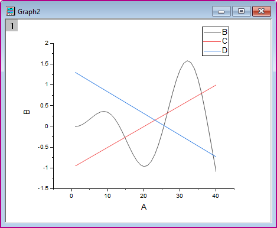
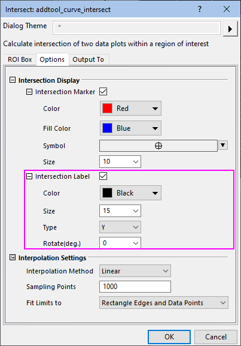
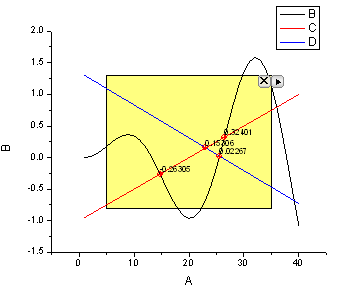
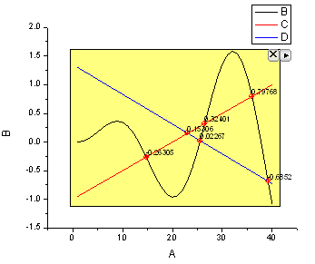
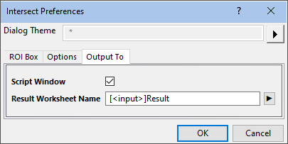
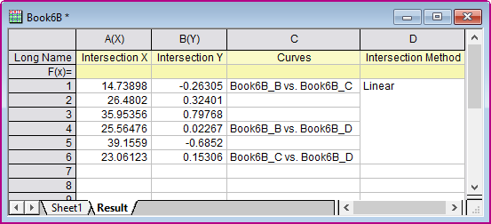

Minitool Kurvenschnittpunkte
CurveIntersection-Gadget
Zusammenfassung
Wenn es mehr als eine Kurve in einem Diagrammlayer gibt, möchten Sie vielleicht die Kurvenschnittpunkte dieser Kurven berechnen. Seit Origin 8.6 steht ein neues Minitool zur Verfügung - Kurvenschnittpunkte - zum Berechnen der Schnittpunkte der Eingabekurven im Diagramm.
Origin-Version mind. erforderlich: Origin 8.6 SR0
Was Sie lernen werden
Dieses Tutorial zeigt Ihnen, wie Sie:
- das Minitool Kurvenschnittpunkt in einem Diagramm verwenden.
- die Kurvenschnittpunkte markieren.
- die Kurvenschnittpunkte im Arbeitsblatt ausgeben.
Schritte
Dieses Tutorial basiert auf dem Projekt: <Origin-Verzeichnis>\Samples\Tutorial Data.opj.
- Öffnen Sie Tutorial Data.opj und navigieren Sie zu dem Ordner Curve Intersection Gadget im Projekt Explorer.
- Markieren Sie die Spalten Col(A) bis Col(D) in der Arbeitsmappe Book6B und klicken Sie dann auf Zeichnen: Einfache 2D: Liniendiagramm, um ein Liniendiagramm zu zeichnen.
- 
- Wählen Sie Minitools: Kurvenschnittpunkte im Hauptmenü, um das Dialogfeld zu öffnen. Wechseln Sie zur Registerkarte Optionen.
- Aktivieren Sie das Kontrollkästchen Überschneidungsbeschriftung auf der Registerkarte Optionen, setzen Sie die Größe auf15, den Typ auf Y und Drehen (Grad) auf 0.
- 
- Klicken Sie dann auf OK, um zum Diagrammfenster zurückzukehren. Das gelbe Rechteck der grafischen Datenauswahl wird zu dem Diagramm hinzugefügt.
- 
- Klicken Sie auf die Pfeilschaltfläche
 oben rechts von der grafischen Datenauswahl und wählen Sie im Kontextmenü Auf gesamten Diagrammbereich erweitern. Das ROI-Feld wird vergrößert, bis es den gesamten Diagrammbereich abdeckt, wie unten zu sehen.
oben rechts von der grafischen Datenauswahl und wählen Sie im Kontextmenü Auf gesamten Diagrammbereich erweitern. Das ROI-Feld wird vergrößert, bis es den gesamten Diagrammbereich abdeckt, wie unten zu sehen.
- 
- Klicken Sie auf die Pfeilschaltfläche oben rechts von der grafischen Datenauswahl ROI. Wählen Sie Einstellungen... im Kontextmenü, um das Dialogfeld Kurvenschnittpunkte Einstellungen zu öffnen. Gehen Sie zur Registerkarte Ausgabe in, klicken ISe auf die Ausklappschaltfläche
 rechts vom Feld Ergebnisblattname und wählen Sie Blatt in Eingabemappe.
rechts vom Feld Ergebnisblattname und wählen Sie Blatt in Eingabemappe.
- 
- Klicken Sie dann auf OK, um zum Diagrammfenster zurückzukehren. Klicken Sie auf die Pfeilschaltfläche oben rechts des ROI-Felds, um Neue Ausgabe im Kontextmenü auszuwählen.
- Die Ergebnisse werden im Skriptfenster ausgegeben. Klicken Sie erneut auf Pfeilschaltfläche und wählen Sie Zum Berichtsblatt gehen im Menü. Die X- und Y-Koordinaten der Kurvenschnittpunkte werden im Ergebnisarbeitsblatt aufgelistet.
- 